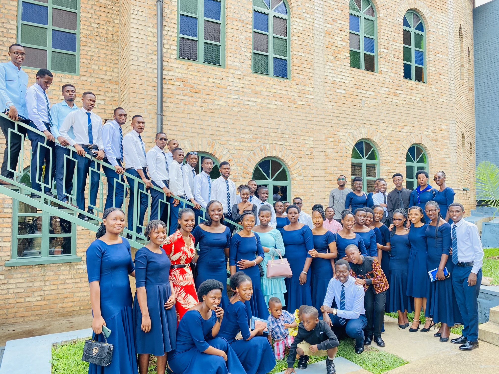
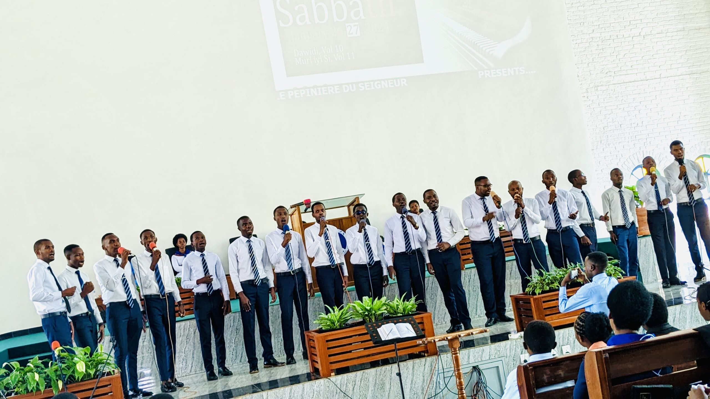
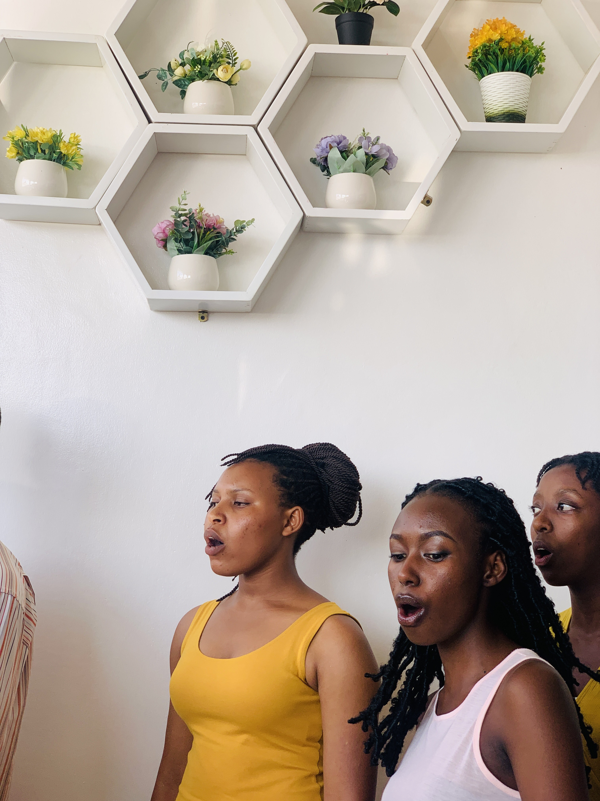
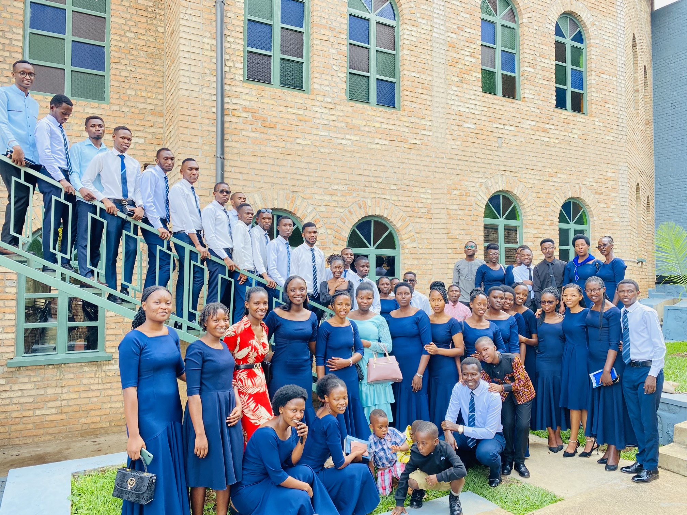
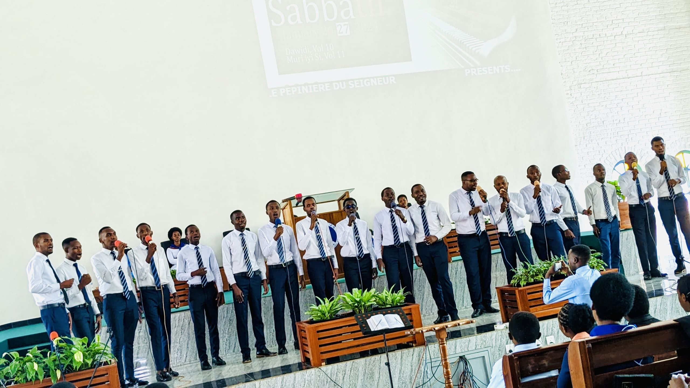
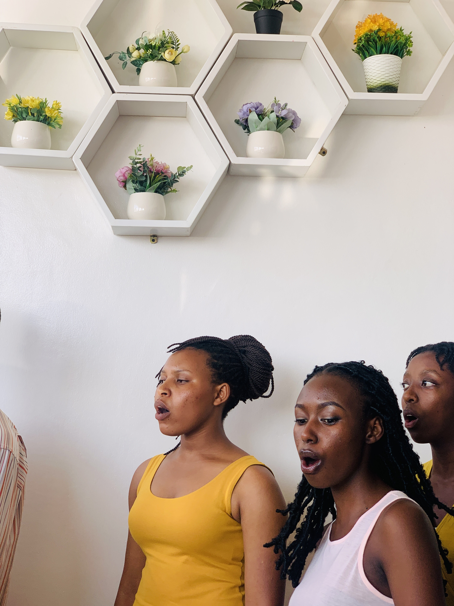

Founded in 1995 and officially named in 1996 at Collège Adventiste de Gitwe, Chorale Pépinière du Seigneur is a gospel choir based at Kaminuza Seventh-Day Adventist Church in Southern Rwanda, Huye District.
We are committed to glorifying God through music, nurturing spiritual growth, and uniting hearts in worship.
To share Christ’s love and prepare people for eternal life through our songs.
Listen to us on Apple Music and Spotify
 





Subscribe to our YouTube Channel